항공모함 조준? 그거 인공위성으로 하면 되는거 아뇨?
게시: 2022-07-07T06:30:11+09:00
<인공위성에서는 얼마나 자세히 볼 수 있나?> 최근 우크라이나 사태를 생생히 보여주는 위성사진을 제공하는 민간 위성업체 Maxar의 native 해상도는 30cm. 아래 사진이 30cm 해상도. 픽셀 하나하나 사이의 거리가 실제 물체로 따지면 30cm에 해당한다는 뜻.
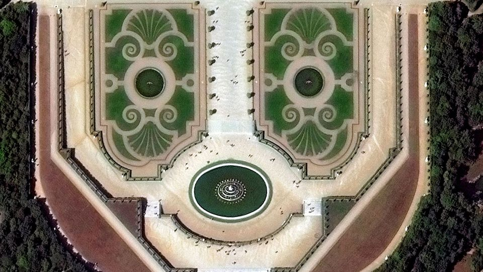
이것도 엄청나게 진보된 것이며 '쓸데없는 고퀄'에 해당할 정도. 가령 NASA가 1970년대부터 꾸준히 쏘아올려 지구 표면을 관찰하고 연구하는 Landsat 프로그램의 경우, 1999년 발사된 Landsat 7 (아래 사진)의 해상도는 15m. (cm가 아니고 m 맞음)
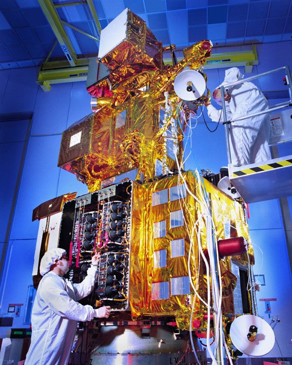
미국의 스파이 위성은 과연 어느 정도일까? 2019년 8월 30일, 우리 트황상께서 아무 생각없이 트위터에 올리신 이란 로켓 발사 사고 현장 위성 사진 (아래 사진)의 해상도는 10cm. 최대 해상도는 당연히 기밀이지만 흔히 6cm 정도까지 될 거라고들 수군댐.
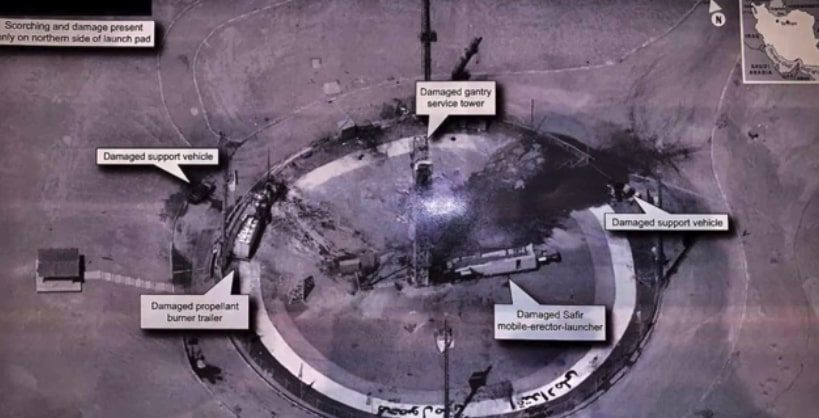
근데 아이폰 덕분에 카메라 전문회사가 망하듯이, 민간 정보통신업계의 눈부신 발전 덕분에 (Maxar가 보여주듯) 위성 사진의 해상도도 과거 스파이 위성의 독보적 위치를 빠르게 위협하는 중. 하지만 트황상이 지멋대로 트윗하신 사진과 같은 해상도는 민간업체에서는 절대 볼 수 없는 이유가 있음. 바로 미국이 National Oceanic and Atmospheric Administration (NOAA, 뭔가 군사당국 또는 정보당국 같지만 실제 역할은 미국 기상청이라고도 볼 수 있음, 아래 사진)을 통해 해상도를 25cm 이하로 규제하고 있기 때문.
<열쇠구멍> 1976년 최초로 발사된 KH-11 block 1 정찰 위성(사진1, 자세한 내용은 기밀이므로 이건 상상도에 불과)은 미국 스파이 위성 역사에 획을 그은 획기적 이벤트. 가장 큰 이유는 최초로 전자광학을 이용한 디지털 사진(electro-optical digital imaging)을 찍기 시작했기 때문. 덕분에 위성에서 찍은 사진을 지상에서 '거의' 실시간으로 볼 수 있게 됨.
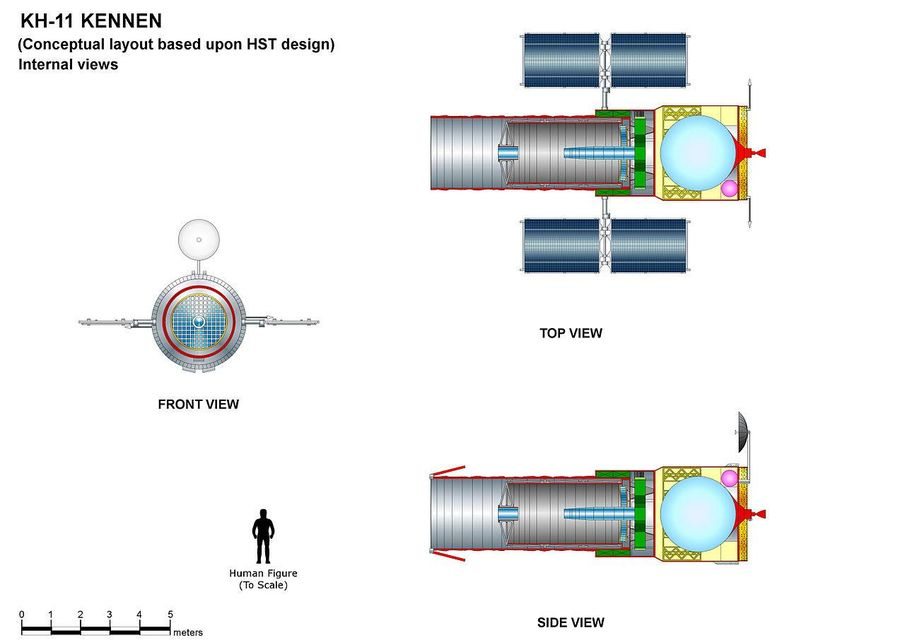
잠깐, 그러면 그 전에는 디지털 이미지가 아니었다는 이야기인데, 그럼 위성에서 정말 필름 카메라를 썼다는 이야기? 맞음. 1960대 내내 미국의 정찰 위성은 필름 카메라를 씀. 아니? 그러면 그 필름을 어떻게 지상에서 받아보나?? 그 필름을 캡슐에 넣어서 위성으로부터 지구에 투하. 캡슐이 대기권에 충분히 들어온 뒤 낙하산을 펼치면 특수 제작된 미공군 항공기가 공중에서 낚아챔 (사진2).
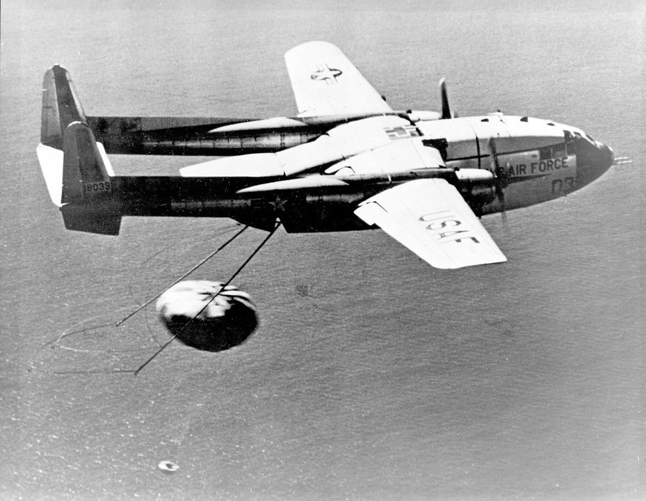
그런데 이게 꼭 언제나 100% 확실히 회수한다는 보장이 없어서, 제 페친이시자 모군사잡지 기자이신 이준규님의 글에 따르면 60~70년대 첩보 영화의 단골 소재가 바로 그런 '잘못 투하된 위성 사진 회수 작전'이라고 함. 즉, 위 사진의 미공군기가 실패하면 아래 사진의 아저씨가 애쉬턴 마틴을 타고 현장에 출동함.
그런데 그렇게 캡슐에 필름을 넣어 투하하는 방식이면 지상에 필름 보내는 것을 몇 번 못할텐데?? 실제로 그렇게 많이는 못했음. 1개 시스템에서 많아야 2번 정도. (사진3).
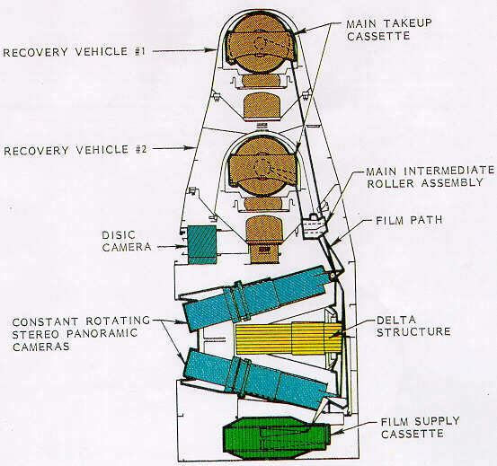
현재까지 이어지는 KH-11 정찰 위성들의 프로젝트 이름, 즉 KH라는 initial의 뜻은 Key Hole. 문의 열쇠구멍으로 훔쳐본다는 뜻.
<인공위성은 모든 것을 본다, 단지 알지는 못한다> 사진1은 2019년 8월 카리브해와 플로리다 일대를 강타한 허리케인 Dorian에 의한 피해를 민간 위성업체 Maxar가 찍은 사진. 이처럼 위성에서는 구름만 없으면, 실은 구름이 있어도 영상 레이더(SAR)를 이용하면 모든 것을 다 볼 수 있음.
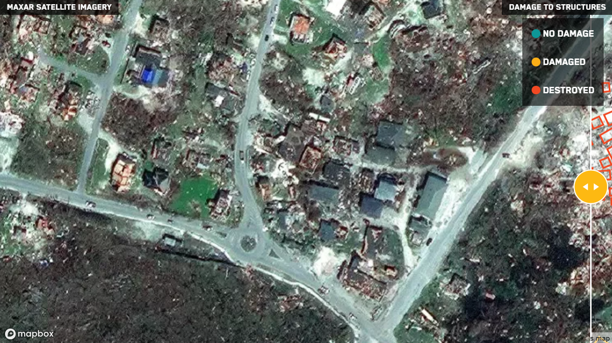
그런데 광학 이미지든 영상 레이더 이미지든 모든 것을 보고 영상으로 기록한다고 해도, 저 집이 부서진 집인지 멀쩡한 집인지, 혹은 유조선인지 항공모함인지 아니면 그냥 바위섬인지 구별할 수 있는 것은 아님. 인공위성이 포착하고 저장하는 영상 이미지는 엄청난 양인데, 이걸 누군가 보고 골라내고 판단하고 평가해야 함. (사진2)
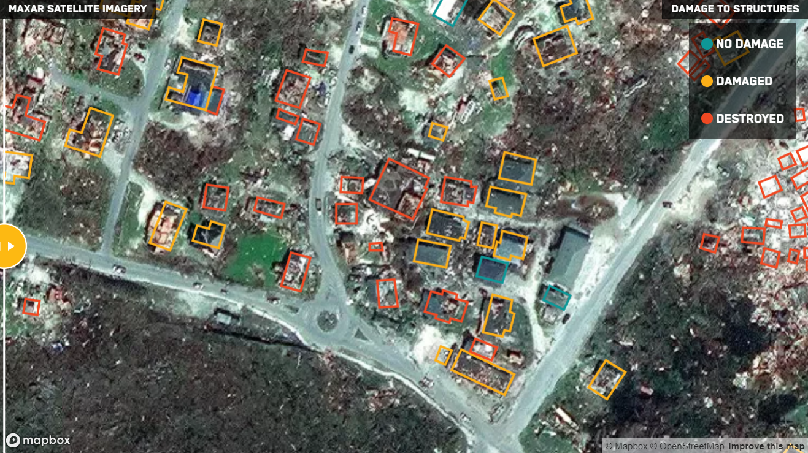
물론 그것도 다 사람이 일일이 눈으로 보고 하는 것은 아니고 컴퓨터 알고리즘을 이용해서, 혹은 요즘은 deep learning을 이용한 인공지능 학습 모델을 이용하여 처리가 가능. 과거에 위성 사진을 일일이 꼼꼼히 보고 평가하던 정보 분석가들의 필요 숫자가 획기적으로 줄어듬. (가면 갈 수록 쓸데없는 지식과 남아도는 시간을 주체 못하는 밀덕들의 설 자리가 점점 줄어듬). 그러나 그런 처리를 인공위성에서 실시간으로 처리가능할까? 어려움. 가장 큰 이유는 역시 전력.
<영상 레이더 데이터를 이미지로 보기 위해 필요한 전력> 문자 그대로, 합성개구레이더라고도 번역되는 SAR (Synthetic Aperture Radar)는 그냥 간단히 말해서 항공기나 선박, 차량 등이 이동하면서 측면으로 쓰윽 긁은 레이더 빔의 반향을 수집하여 얻은 데이터로부터, 이동하며 긁은 지역의 형상을 파악하는 방식의 레이더. 간단히 말해 그냥 레이더로 영상 이미지를 얻을 수 있는 방법. 구멍, 개구부라는 뜻의 aperture라는 단어는 여기서는 실제 구멍이 있다는 뜻이 아니라 긁으면서 이동한 거리를 뜻하는 것. (사진1)
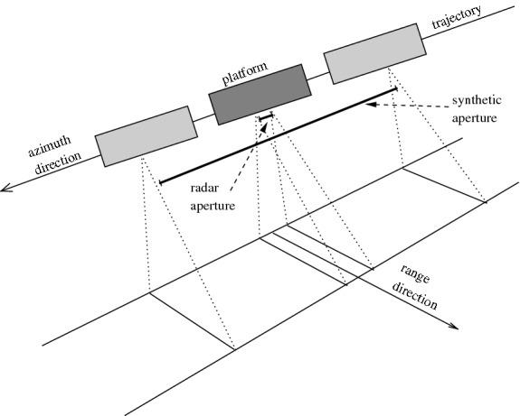
문제는 이렇게 얻어진 데이터는 그냥 숫자일 뿐, 이걸 사람이 보고 인식할 수 있는 이미지로 바꾸려면 꽤 큰 연산용량이 필요하다는 것. SAR 데이터는 이동하면서 그 시점마다 얻어지는 데이터라는 특성상 일종의 수열과 행렬 형태로 이어짐 (사진2). 행렬(matrix) 연산은 대표적인 병렬 연산이고, 그런 연산에 최고의 효율을 보여주는 것은 바로... GPU (Graphics Processing Unit).
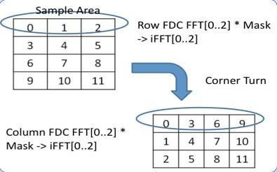
Keplar GPU인 K40을 써서 연산을 해도 16,283 x 8,192 크기의 샘플 데이터를 연산해서 이미지를 얻는데 10초가 넘게 걸림. 그 이미지에서 항공모함과 유조선을 구분하는데 걸리는 연산 시간은 또 별도임. 요즘 인공지능...보다는 암호화폐 채굴에 많이 쓰였던 NVIDIA GPU들의 가장 큰 문제는 높은 가격대도 있지만 그보다도 전력 사용량. 어지간한 서버 CPU보다도 전력 사용량이 2배 이상인 경우가 많으며, 대략 200W 정도라고 생각하면 됨. (사진3)
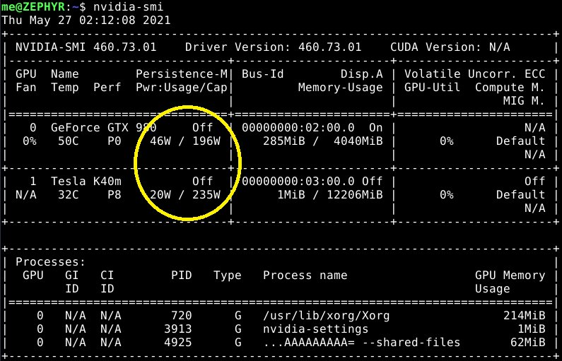
가정용 선풍기가 대략 50W 사용. GPU가 전기 많이 먹는다면 그냥 CPU 쓰면 되지 않을까? 아님. 행렬연산은 저렇게 GPU를 쓰는 것이 훨씬 power-efficient함. 그런데 인공위성에서 쓸 수 있는 전력량은 대충 어느 정도일까? 항공기나 선박, 심지어 자동차 같은 경우도 강력한 엔진으로부터 엄청난 전기를 생산할 수 있지만 인공위성은 전력 측면에서는 많이 가난함. 당연히 스파이 위성들의 구체적인 사양은 대외비인데, 인도의 SAR 위성인 RISAT-2의 경우 전력용량이 750W. 이런 환경에서 GPU를 이용하여 실시간으로 "지금 내가 보고 있는 것이 항공모함인지 유조선인지 바위인지" 파악하는 것은 불가능. 그러나 잠깐. 우주에는 구름도 없고 공기도 없으니 그냥 엄청나게 큰 태양광 패널을 펼치면 전기는 무한정으로 얻을 수 있지 않을까? 여기서 또 다음 이야기로...
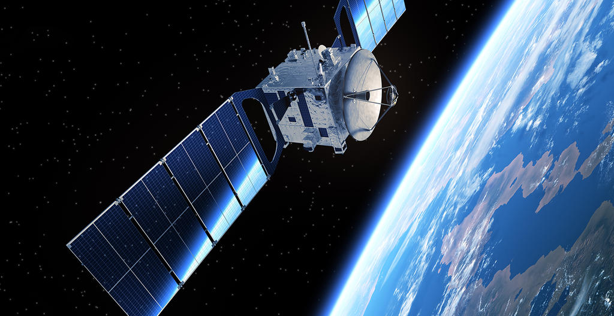